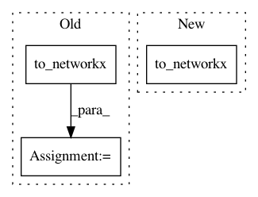

54ff7b04669450ceca33852407891c5645472ca5,test/utils/test_convert.py,,test_to_networkx,#,27
Before Change
col = torch.tensor([1, 0, 0])
edge_attr = torch.Tensor([1, 2, 3])
G = to_networkx(torch.stack([row, col], dim=0), x, edge_attr, pos)
assert G.nodes[0]["x"].tolist() == [1, 2]
assert G.nodes[1]["x"].tolist() == [3, 4]
assert G.nodes[0]["pos"].tolist() == [0, 0]
assert G.nodes[1]["pos"].tolist() == [1, 1]
After Change
edge_attr = torch.Tensor([1, 2, 3])
data = Data(x=x, pos=pos, edge_index=edge_index, weight=edge_attr)
G = to_networkx(data, node_attrs=["x", "pos"], edge_attrs=["weight"])
assert G.nodes[0]["x"] == [1, 2]
assert G.nodes[1]["x"] == [3, 4]
assert G.nodes[0]["pos"] == [0, 0]
assert G.nodes[1]["pos"] == [1, 1]
In pattern: SUPERPATTERN
Frequency: 3
Non-data size: 3
Instances
Project Name: rusty1s/pytorch_geometric
Commit Name: 54ff7b04669450ceca33852407891c5645472ca5
Time: 2019-04-29
Author: matthias.fey@tu-dortmund.de
File Name: test/utils/test_convert.py
Class Name:
Method Name: test_to_networkx
Project Name: dmlc/dgl
Commit Name: 7156c7163b046686064d7c9de445041870e672bc
Time: 2018-12-01
Author: minjie.wang@nyu.edu
File Name: tutorials/1_first.py
Class Name:
Method Name:
Project Name: rusty1s/pytorch_geometric
Commit Name: f89cf5db8b52256d7ca4405dc8a4cd809c4e9229
Time: 2018-12-28
Author: matthias.fey@tu-dortmund.de
File Name: test/utils/test_convert.py
Class Name:
Method Name: test_to_networkx